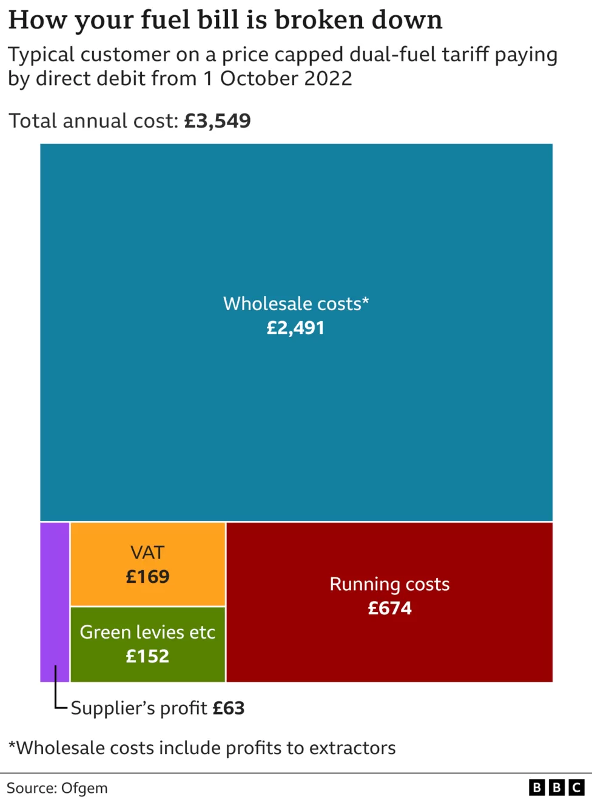

Liz Truss Is The Only Choice To Lead Our Great Nation
29th August 2022
There’s no escaping the fact that we have a tough winter ahead of us.
Last Friday we got the first glimpse of what’s coming down the line as the utilities regulator in Great Britain, Ofgem, raised the energy price cap to an eye watering £3,549 a year with further increases expected after Christmas. On the same day in Northern Ireland (where utilities are regulated separately) the region’s largest household gas supplier raised prices to the equivalent annual cost of £2,393 a year.
Such staggering increases, as much as 80% in Great Britain, are chiefly being driven by the seemingly never ending rise in the wholesale energy cost which makes up 70% of the aforementioned Ofgem figure. Alas this is unlikely to abate any time soon as the main driver of gas prices in the European market, the War in Ukraine, is far from a resolution.
Though there has been some respite at the petrol pump lately where prices have been falling for the past several weeks as a result of Brent Crude falling back to the levels it was at before the Invasion of Ukraine. However this may be short lived as last week the oil cartel, OPEC, hinted that it was considering a production cut that could send petrol prices skyward again.
While none of this inspires confidence, especially as current projections show this significant uptick in energy prices to be prolonged, in the near and longer term there is some cause for optimism.
Firstly there is the current financial support package to households, where the most vulnerable will receive £1,200, is already in motion. As the situation is fast developing the new Prime Minister will almost certainly implement a fresh package later in the year.
Some of the mooted policies that could be enacted quickly would be the suspension of VAT and “Green Levies” on household bills, however these only make up ~9% of the total cost so on their own won’t make a huge difference.
Outside of that there are signs of some innovative thinking emerging, such as the plan outlined by Scottish Power last week. Under their proposals the utility companies would freeze prices to consumers for two years with the Government underwriting loans to them in order to cover the difference between what they’re charging and wholesale prices they’re paying. Their best estimate is that this measure would cost £100bn and be paid back to the Government over a 15-20 year period.
Though there is some debate about whether we should be going down the route of direct support for households or “price fixing” strategies but should we settle on the latter we need to be clever about how we do it. For example, to fund a measure similar to the one suggested by Scottish Power it may be prudent to create a kind of “Energy War Bond” that people can buy and receive an annual return over the long maturity of such a product. Such an instrument would be very attractive to institutional investors such as pension funds and would help dampen inflation to some degree by taking money circulation, a reverse Quantitative Easing if you will.
In the here and now support for households is coming, the anxiety we all face is what it will actually entail and how it will evolve with the crisis.
Beyond immediate Government measures the new situation we find ourselves in has led to a rethink in a once taboo subject, fracking!
This is very significant as the UK has huge identified reserves that can be tapped immediately and brought online rather quickly. According to some reports there is even a company that claims, if given the immediate go ahead, they can get their gas on the market by January 2023.
As someone who used to work in upstream oil and gas this is all very plausible. The extent of our onshore gas deposits are well known and the geology of the areas where it resides is thoroughly understood. As a result this means oil and gas companies can move almost immediately to production from these reservoirs.
The number of wells needed to get significant quantities of gas to market in this scenario can also be achieved rather quickly. I’ve been on wells that were drilled within less than 10 days, once the drilling is finished the rig moves on to the next one and the production crew comes along to get it ready to start pumping gas. There’s an established production line to these things which we can apply straight away.
Going ahead with fracking has two main benefits, firstly it gets more gas into our market lowering prices and secondly it will transform the economic opportunities for those living in the areas where the reservoirs are.
I worked for a number of years on the major Coal Seam Gas projects in rural Queensland in Australia and I saw the transformation it brought of those communities. Lots of brand new, high paying jobs for mechanics, electricians, truck drivers, labourers and the occasional geologist. The same can happen in the North of England if we let it.
Basically if you want to level up, you’ve got to frack!
Should the fracking renaissance take its course it would, counterintuitively, assist the UK’s renewables strategy. While we will progressively decarbonise the economy, gas will play a key role in counteracting its intermittency but will reduce over time.
Our main strength in this area is wind power, with our onshore capacity being ~14GW and our offshore capacity being ~11GW. Of those two the growing area is offshore which increased its capacity by about a fifth in 2021 and has a further 43GW of capacity in the pipeline.
Along with the falling unit price of offshore wind, new storage technology is allowing us to make the most of it. Case in point Highview Power are developing facilities to store the excess energy generated by renewables at off peak times so it can be distributed to the grid when needed utilising the same technology used in LNG storage.
Their plant in Humberside, due to be operational in 2024, will be able to store 2.5GW for 12 hours. That may not sound like much but the average lull in North Sea winds generally lasts less than 24 hours, enough to cover most gaps in generation.
Net-zero isn’t something that should be abandoned in our current situation but we can reappraise how we go about it and on what timescale.
Lastly, on the longer term end of things, we have embraced nuclear power again. In March this year the Government passed the Nuclear Energy (Financing) Act 2022, enabling investment in nuclear energy to be a more attractive prospect for investors by creating a Regulated Asset Base to fund future development along the lines of other large infrastructure projects in the past.
Further to this Rolls Royce has gone headlong into developing Small Modular Nuclear Reactors, power plants built on the technology used in nuclear submarines that can be manufactured in a production line. They expect their reactor designs to get Government approval by 2024 and to be contributing to the grid by 2029.
The Rolls Royce venture may seem like the “jam tomorrow” projects we’ve heard so much about over the years (nuclear fusion comes to mind) but considering it’s based on tried and tested technology as well as receiving £210m in Government backing I’m very hopeful.
Though the current situation may seem rather bleak there’s a lot of exciting stuff in the works to alleviate our current predicament. We are in a transition, aggravated by certain world events, however we are in a much better situation than many of our peers.
Germany for instance pursued a renewable policy that led them to ultimately depend on gas from a hostile foreign power while shutting down other options. The UK on the other hand has pursued a multi pronged approach, meaning we have diversity in our energy supply as it stands as well as other avenues to come online in the near future.
This winter may be harsh but, providing the right decisions are taken, we are on course to come out of it stronger.
Energy independence won’t be built in a day, fortunately we have the foundations already laid.